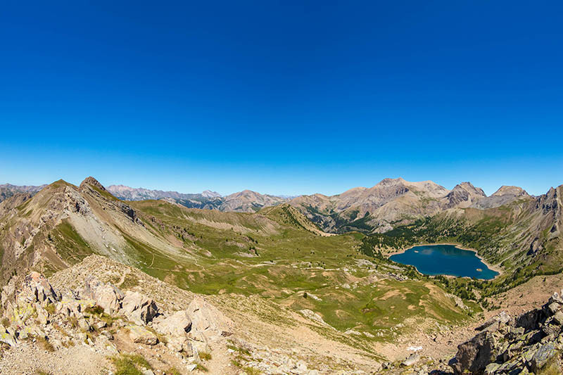
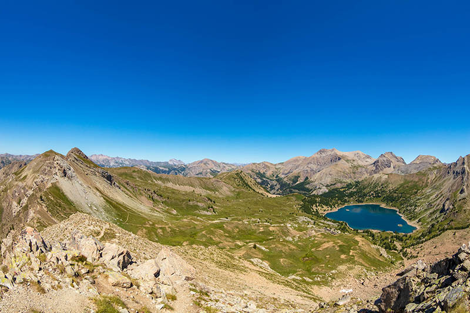
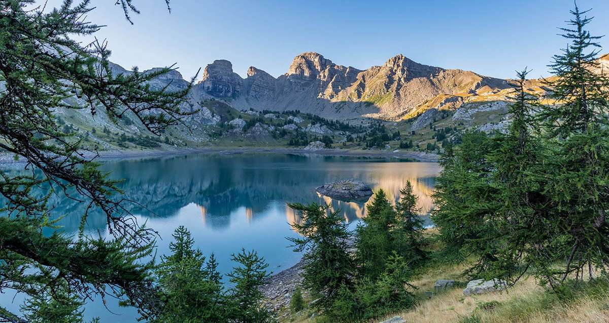
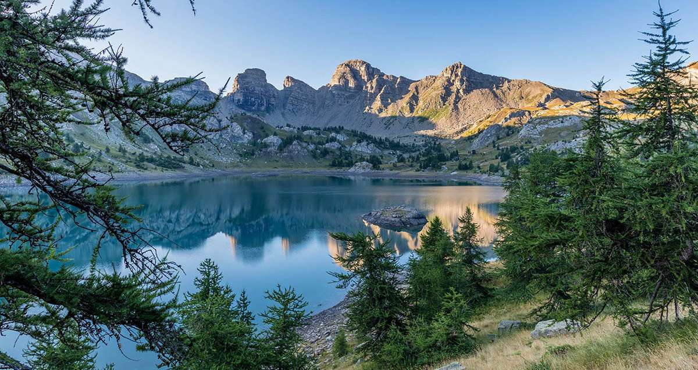

Lac d'Allos

 

 


- randonné
- Rejoindre le lac d'Allos A PIED
Départ du village d'Allos, par le GR56B : 6h aller-retour
Départ du parking de la Cluite (100 places) : 4h30 aller-retour
Départ du parking du Laus (120 places) : 1h30 aller-retour
Tour du lac d'Allos : 1h
- Le lac d'Allos en hiver... prudence !!
L'itinéraire en hiver n'est en aucun cas sécurisé et il traverse des zones à risques avalancheux avec plusieurs couloirs particulièrement dangereux.
L'accès se fait par la route (et non p.0ar le sentier comme en été) à vos risques et périls.
Il faut compter environ 3 heures de marche d'approche .depuis le dernier accès routier (parking de la Chaup). Un équipement adapté est bien entendu nécessaire (boissons chaudes, vivres, vêtements chauds, chaussures de marche étanches, raquettes).